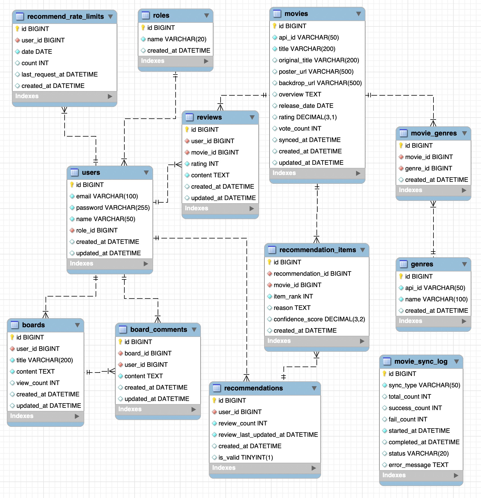

01
Movie World
AI基盤映画推薦
プラットフォーム
ユーザーレビューに基づくパーソナライズされた映画推薦サービス
02
目次
01
開発目的
問題認識と解決方案
02
システム概要
プロジェクト紹介と特徴
03
主要機能
6つのコア機能
04
技術スタック
使用技術とツール
05
データベース設計
システム設計とDB構造
06
機能デモ
実装内容と画面
03
開発目的
?
問題認識
数多くの映画の中から自分の好みに合う映画を見つけることが困難。平均評点だけでは個人の好みを反映できない限界がある。
💡
解決方案
ユーザーが作成した映画レビューをAIが分析して個人の好みを把握。Google Gemini AIを活用した知能型推薦システムを構築。
☆
期待効果
ユーザーカスタマイズ映画推薦で満足度向上。レビュー基盤コミュニティ形成。AI技術を活用した実用的なウェブサービス実装経験。
04
システム概要
Movie World
ウェブベース映画推薦プラットフォーム
コア機能:
AI基盤カスタマイズ映画推薦
主要ユーザー
一般ユーザー:
映画検索、レビュー作成、AI推薦
管理者:
統計照会、映画データ同期管理
リアルタイム映画情報
TMDB API連動
知能型推薦エンジン
Google Gemini AI活用
好み分析
ユーザーレビュー基盤
コミュニティ
掲示板機能
多言語対応
韓国語/日本語
セキュリティ
Spring Security基盤
05
主要機能
映画検索・照会
TMDB API連動でリアルタイム映画情報提供。人気順/最新順/評点順ソート機能。
レビューシステム
映画別評点(1-5点)とレビュー作成。レビュー修正/削除機能。
AI映画推薦
Google Gemini AI活用。ユーザーレビュー基盤好み分析。カスタマイズ映画5編推薦。
掲示板
投稿作成/修正/削除。コメント機能。検索とページング処理。
管理者ダッシュボード
統計現況照会。映画同期管理とログ照会。手動同期機能。
多言語対応
韓国語/日本語動的言語切替。MessageSource活用国際化。
06
技術スタック
Backend
Java 17
Spring Boot 3.5.10
Spring Security
MyBatis 3.0.5
MySQL 8.0
Frontend
Thymeleaf
Bootstrap 5
JavaScript (AJAX)
External APIs
TMDB API - 映画データ
Google Gemini API - AI推薦
Build Tool
Gradle - ビルドと依存性管理
07
データベース設計
主要テーブル
roles:
権限情報（ROLE_USER / ROLE_ADMIN）
users:
会員情報（メール・パスワード・名前・権限）
genres:
ジャンル情報（TMDB API連携）
movies:
映画情報（タイトル・ポスター・あらすじ・公開日等）
movie_genres:
映画‐ジャンル対応（多対多）
reviews:
レビュー情報（会員ごとの映画評価・コメント）
boards:
掲示板投稿（タイトル・本文・閲覧数）
board_comments:
掲示板コメント
recommendations:
AI推薦結果キャッシュ（会員ごと1件）
recommendation_items:
推薦対象映画（順位・推薦理由）
recommend_rate_limits:
推薦リクエスト制限（1日あたり回数）
movie_sync_log:
TMDB映画同期実行ログ

08
ログインと会員登録
会員登録機能
メール、パスワード、名前入力
メール重複チェック
パスワード暗号化(BCrypt)
入力有効性検証(@Valid)
ログイン機能
Spring Security フォームログイン
メール/パスワード認証
セッション基盤認証
ログイン失敗処理
09
映画リストと検索
映画検索機能
タイトルで映画を検索（TMDB API利用）。リアルタイム検索結果表示。
映画目録機能
TMDB APIから人気映画目録を表示。ポスター、タイトル、評点。人気/最新/評点順ソート可能。
映画詳細ページ
映画ポスター、タイトル、あらすじ、評点、公開日を表示。レビュー作成・表示機能付き。
10
AI推薦システム
レビュー収集
ユーザーレビュー最小5個以上必要
1
2
AI分析
Gemini APIに好み分析リクエスト
結果受信
JSON形式推薦結果受信とパーシング
3
4
映画マッチング
TMDB検索で映画マッチング
結果表示
推薦結果保存と表示
5
11
AI推薦の技術的特徴
推薦結果表示
推薦映画5編をカード形式で表示。各映画別ポスター、タイトル、推薦理由を提供。
JSON Parser
Truncated JSON Parserで応答切断処理。安定的なデータ処理を保証。
Rate Limiting
日30回、分1回制限。API使用量を効率的に管理。
多言語プロンプト
韓国語/日本語プロンプト対応。ユーザー言語設定に合わせた推薦。
12
掲示板機能
投稿管理
投稿作成/修正/削除機能。タイトルと内容入力。閲覧数表示。
コメント機能
投稿別コメント作成。リアルタイムコメント表示。コミュニティ活性化。
検索とページング
タイトル・内容検索機能。効率的なページング処理。ユーザビリティ向上。
13
管理者ダッシュボード - 同期管理
同期ログテーブル
同期タイプ、成功/失敗数、時間、状態を表示。詳細なログ管理で問題追跡が容易。
手動同期
手動同期ボタン提供。AJAX基盤非同期処理。プログレスバーモーダルで進行状況表示。
自動同期
Spring Scheduler活用。毎日早朝自動実行(人気映画2時、現在上映作3時、公開予定作4時)。
14
実装の技術的ハイライト
セキュリティ
Spring Securityでフォーム基盤認証実装。BCryptパスワード暗号化。セッション管理と権限基盤アクセス制御。
データ管理
MyBatis ORM活用。効率的なSQL管理。トランザクション処理でデータ整合性保証。
外部API連動
TMDB APIで映画データ取得。Gemini APIでAI推薦生成。非同期処理で性能最適化。
国際化
MessageSource活用多言語対応。韓国語/日本語動的切替。ユーザー設定基盤言語提供。
スケジューリング
Spring Schedulerで自動同期。定期的な映画データ更新。システム安定性向上。
レスポンシブUI
Bootstrap 5活用。モバイル/デスクトップ対応。Thymeleafテンプレートエンジン。
15
開発経験と学習
Spring Boot
Spring Boot 3.x基盤ウェブアプリケーション開発。依存性注入とAOP理解。RESTful API設計原則適用。
AI技術活用
Google Gemini API統合経験。プロンプトエンジニアリング学習。AI応答処理とエラーハンドリング。
データベース設計
正規化されたDB設計経験。MyBatis ORM活用。効率的なクエリ最適化。
セキュリティ実装
Spring Security認証/認可。パスワード暗号化とセッション管理。セキュアなウェブアプリケーション開発。
16
ありがとうございました
Movie World
AI基盤カスタマイズ映画推薦プラットフォーム
Spring Boot
バックエンド開発
外部API連動
TMDB & Gemini
AI技術活用
知能型推薦システム
UX設計
ユーザー中心設計